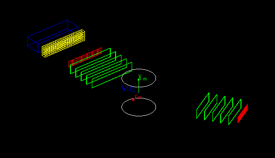

Hands on 3: Build detector, retrieve simulation results
In this third hands-on you will learn how to:
- Create a semi-realistic geometry
- Collect simulation output from sensitive detectors in hits
- Use the event user-action to dump event information from hits on screen
The code for this hands-on session
is here (
for your reference, the complete solution
is also availavble here).
Copy the the tar ball to your local area.
Follow the instructions of Hands On
1 to configure with cmake the code and build it. Try
out the application:
$ cd <tutorial>
$ tar xzf HandsOn3.tar.gz
$ cd HandsOn3
$ cmake .
$ make -j 2 -f Makefile
$ ./G4tut
|
Note: Ignore compiler warning messages. They disappear once you complete the exercise.
This geometry should be displayed:

The geometry is same as Hands On
2, as we will start from here to build a two-arm spectrometer. The first arm
is already defined, and in the first exercise you will build
the second arm completed with a calorimeter:
- Each arm includes 5 drift-chamber planes to measure the
position of the passing particles (in green).
- Each arm includes a hodoscope made of scintillator plates to
measure the time-of-flight of the incoming particles (in red).
- A central magnetic system to deflect the charged particles
(white cylinder).
- Exercise: An electromagnetic calorimeter composed of CsI crystals
(yellow in the picture).
- Exercise: An hadronic sampling calorimeter composed of Lead as
absorber and Scintillator as active material (blue).
The second arm can be rotated between runs. The
magnetic-field value can also be changed. User defined UI commands allow
to change arm rotation and magnetic field value at run time.
At the end of this hands on the complete geometry will look
like:
